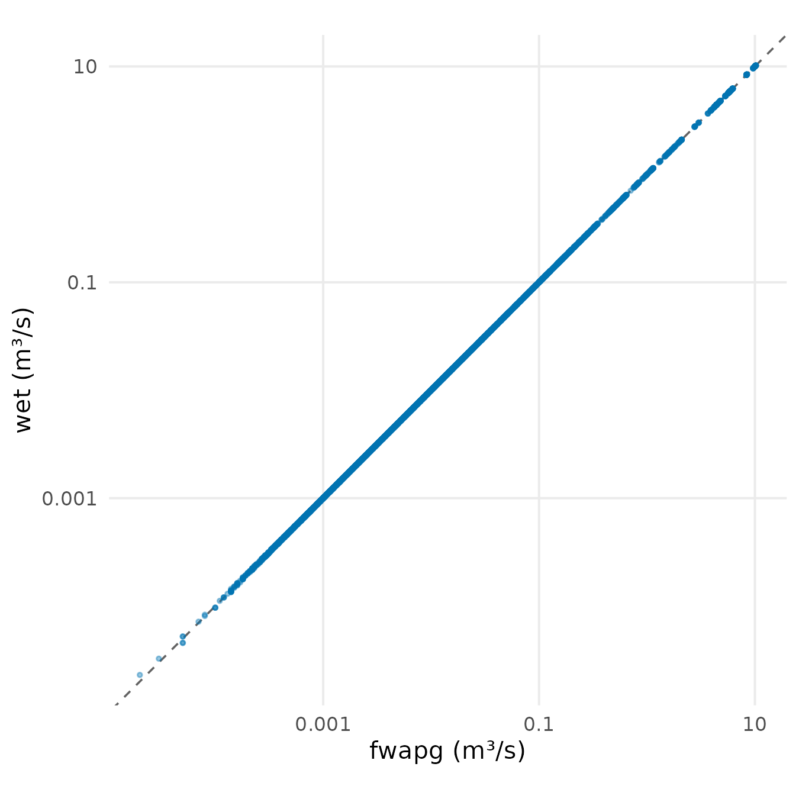
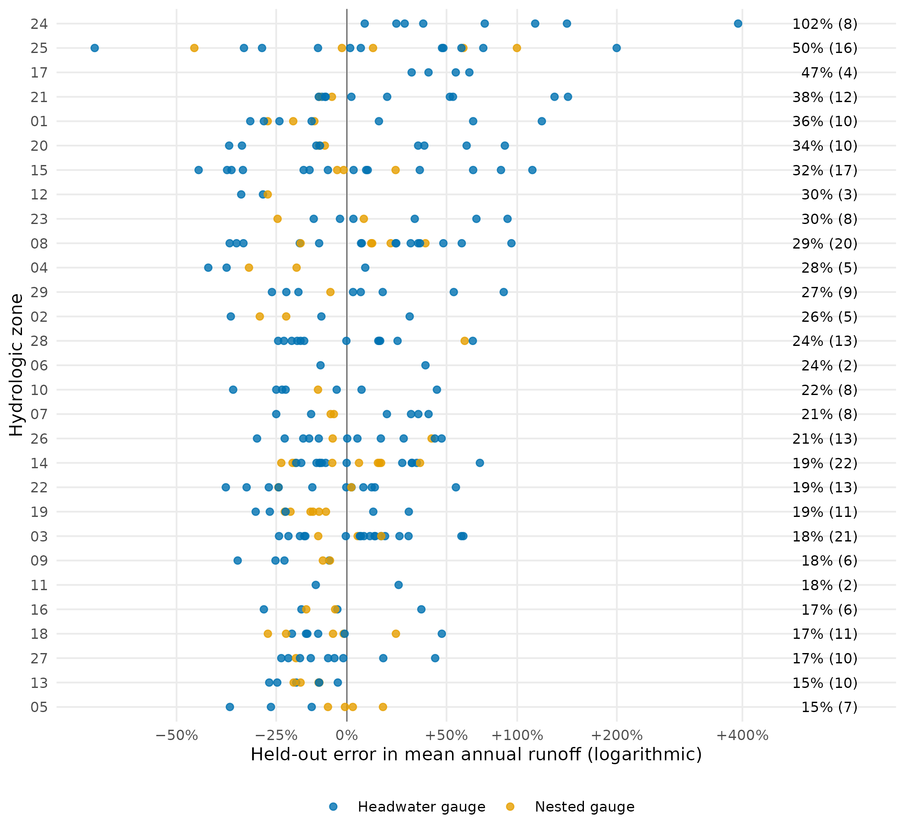

wet estimates mean annual discharge (MAD) for every stream segment of BC’s Freshwater Atlas, in two ways. The first follows fwapg: PCIC’s VIC-GL runoff and baseflow, averaged over 1981–2010 and accumulated upstream. It covers only the Peace, Fraser and Columbia. The second is wet’s own open water balance, precipitation less evapotranspiration, adjusted by zone against HYDAT gauges. It covers the province. This vignette shows both on two watershed groups: the Salmon River (1,794 km²), a headwater Fraser group, and the Bulkley River (7,762 km²), in the Skeena, where fwapg has no discharge.
Reproducing fwapg
fwapg samples each watershed polygon at the PCIC cell under its centroid. It then averages over the polygon and everything upstream of it, weighted by area. wet rebuilds that number with its own code. On every one of the 9,000 Salmon River segments that fwapg gives a value, it matches fwapg to the five decimals fwapg stores.

Mean annual discharge on the 9,000 Salmon River segments fwapg gives a value: its stored value against wet’s rebuild of it from PCIC VIC-GL, 1981–2010, with the 1:1 line dashed. Both axes are logarithmic.
Sampling small watersheds
A PCIC cell is 0.0625°, about 7 by 4 km here, so the centroid rule hands a small watershed the value of one cell. wet can instead weight every cell by the area it covers. Under 10 km², 11% of watersheds move by more than 5%, by up to 24% at the 99th percentile. Above 100 km², the 99th percentile is 2.8%, because a large basin averages many cells either way.

Change in mean annual runoff from area-weighted sampling, against centroid sampling, for the 4,248 Salmon River watersheds that carry a stream. Upstream area is on a logarithmic axis.
Two groups, two products
Both products cover the Salmon River, and they disagree there. The open water balance gives a median 1.47 times the PCIC value per segment. The gauges nearby show where each misses. The balance runs high at all 5 of them, by +6% to +38%. At the 2 smallest basins fwapg is within 5%, so the gap there is the balance’s. At the 3 larger ones fwapg runs −14% to −25%, and the two share it. At 08KC001, which drains the group, they bracket the observation: +38% against −25%. The map below shows PCIC’s values. The balance’s errors in the table are out of sample (blocked cross-validation).
| Gauge | Area (km²) | Observed (mm) | Water balance (held out) | fwapg |
|---|---|---|---|---|
| 08KC001 Salmon River near Prince George | 4,227 | 205 | +38% | −25% |
| 08KC003 Muskeg River north of Joanne Lake | 297 | 224 | +35% | −2% |
| 08JE004 Tsilcoh River near the Mouth | 439 | 180 | +34% | −1% |
| 07ED001 Nation River near Fort St. James | 4,356 | 401 | +6% | −14% |
| 08JE001 Stuart River near Fort St. James | 14,235 | 285 | +11% | −17% |

Mean annual discharge on 2,180 of the 2,181 Salmon River segments of order 3 or more, from PCIC VIC-GL through wet (fwapg’s values). The keymap marks the group in BC.
fwapg has 0 discharge rows in the Bulkley River, which lies outside PCIC’s coverage. The open water balance supplies a value for every segment that has a watershed. The 7 gauges in the group are part of the balance’s validation. Their held-out error averages 37% in absolute terms.

Mean annual discharge on 7,748 of the 7,755 Bulkley River segments of order 3 or more, from the open water balance, and the 7 calibration gauges in the group, filled by the held-out error of the balance at each.
Skill out of sample
The balance’s coefficients are fitted on HYDAT gauges, so its skill is scored on gauges the fit did not see. Each WSC sub-sub-drainage is held out in turn and predicted from the rest. Over 290 gauges, the mean absolute error in annual runoff is 28%, and 51% fall within ±20%. Headwater gauges score 31%, and nested ones, whose basins hold other gauges, score 17%. Zone 24, a semi-arid interior plateau, is the outlier at 102%. The Bulkley River gauges fall in zones 08 and 09.

Modelled against observed mean annual runoff at the 290 calibration gauges, each predicted with its own sub-sub-drainage held out of the fit, by hydrologic zone. Zones are ordered by mean absolute error, printed at the right with the number of gauges.
The recipe
This is the PCIC path for one headwater group, as
scripts/mad_parity.R runs it. It needs fwapg and the PCIC
server. The open water balance is a pipeline of scripts
(scripts/wb_inputs.R to scripts/wb_output.R;
see the package’s CLAUDE.md). Both run on cached outputs
here (see Cached inputs, below).
library(wet)
conn <- DBI::dbConnect(RPostgres::Postgres(), dbname = "fwapg")
# PCIC VIC-GL runoff and baseflow over the group's extent, 1981-2010
bbox <- c(-124.12, 54.22, -123.12, 55.11)
runoff <- terra::rast(wet_pcic_fetch("RUNOFF", bbox, "1981-01-01", "2010-12-31"))
baseflow <- terra::rast(wet_pcic_fetch("BASEFLOW", bbox, "1981-01-01", "2010-12-31"))
mad_cell <- wet_runoff_annual(runoff) + wet_runoff_annual(baseflow) # mm/yr per cell
# every watershed polygon in the Fraser; those inside the extent get a cell value
ws <- wet_ws_fetch(conn, "100")
in_bb <- ws$lon >= bbox[1] & ws$lon <= bbox[3] & ws$lat >= bbox[2] & ws$lat <= bbox[4]
cells <- wet_ws_sample(mad_cell, ws[in_bb, c("watershed_feature_id", "lon", "lat")], "centroid")
up <- wet_upstream_mean(ws, cells, "total", irregular_pairs = wet_upstream_irregular(conn, "100"))
up$mad_m3s <- wet_mm_to_m3s(up$value, up$upstream_area_m2)What it does not show
- fwapg’s stored upstream area is a stale snapshot. In the Fraser, 1,731 of 644,710 polygons carry a stored area that differs from the live accumulation. None of them changes a Salmon River segment, so the parity above does not test it. wet uses the accumulated area except to reproduce fwapg.
- PCIC covers only the Peace, Fraser and Columbia. Elsewhere, as in the Bulkley River, the open water balance is the only estimate. A model that classifies habitat on fwapg’s discharge gets nothing there.
-
The zone adjustment passes its gate only under a variant
added later. The pre-set specification gave sparsely gauged
zones one shared level and failed. The “no adjustment” variant that
passes was offered after that result, so the skill above is mildly
optimistic (
research/water_balance_method.md). - Segments without a watershed. 8 segments of order 3 to 7 have no watershed polygon in the Freshwater Atlas lookup, so neither product gives them a value. They are left off the maps, which leaves short gaps in some streams.
Cached inputs. PCIC VIC-GL through
scripts/mad_parity.R; the open water balance from province
run 962a9cc2c4 (annual AET cfu, HYDAT release 2025-10-14); built 2
October 2026 at commit c5b8f9b. Regenerated by
data-raw/segment_vignette_data.R. Map layers from the
Freshwater Atlas (fwapg) and BC Geographic Names, by
data-raw/segment_vignette_map.R.